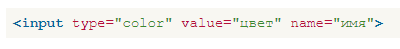

Выбор цвета
Для выбора шестнадцатеричного значения цвета в формы HTML5 включено специальное поле, которое позволяет указать желаемый цвет.
Синтаксис создания такого поля следующий.

Атрибут value необходим для установки исходного цвета и может быть опущен, name используется для идентификации получаемого значения.
Вид поля для выбора цвета возложен на браузеры и может различаться по своему оформлению. В действительности же пока только Opera и Chrome корректно работает с выбором цвета, остальные браузеры покажут стандартное текстовое поле.
В примере 1 показано, как создать поле для указания желаемого цвета
Пример 1. Выбор цвета